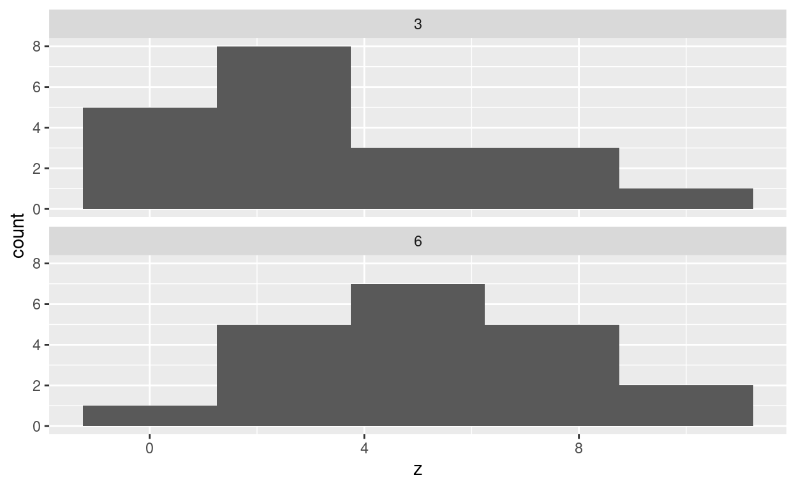
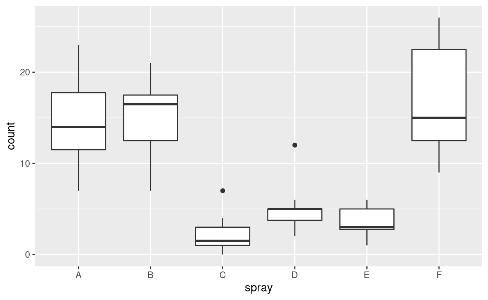

In the same way that the signed rank test is mostly a waste of time, here I argue that the rank sum test is very rarely useful, and offer a less well-known test to use instead.
In a previous post, I argued that the signed rank test is a waste of time (to learn and to do) in all but unlikely cases. In this post, I argue that the same is true for the rank sum test (Mann-Whitney test, Wilcoxon two-sample rank sum test), and suggest a much-neglected test to use instead.
The package smmr is one that I wrote myself, and lives on Github here. It may be installed using install_github from package remotes, or using pkg_install from package pak.
The two-sample \(t\)-test is probably your first idea for comparing (means of) two independent samples from two different populations, such as one set of people who undergo some (real) treatment and a different set of people who undergo some different (eg. placebo) treatment. (If each person undergoes both treatments, this is matched pairs, and requires a one-sample test on the differences between the outcomes on each treatment for each person.)
There are actually two flavours of two-sample \(t\)-test:
t.test is a different test due to Welch and to Satterthwaite.1 This does not assume equal variances, but the test statistic (obtained by estimating each population’s variance separately) does not have an exact \(t\)-distribution. It is assumed that the test statistic has a \(t\)-distribution with a different (usually fractional) degrees of freedom that Welch and Satterthwaite each give a formula for; this assumption is usually good.In practice, when both tests apply, the two tests usually give very similar P-values, and so there is no harm in only ever using the Welch-Satterthwaite test, and thus the pooled \(t\)-test is really only a curiosity of math stat classes. If you really want the pooled test, you have to ask t.test for it specifically (using var.equal = TRUE). If the two populations have different variances, then the pooled test can be very misleading. I will illustrate, first from populations with equal variances. Before that, though, generating the random samples in long format is a bit annoying, so I define a function to do that first, with the sample sizes, population means, and population SDs as vector input (each of length 2:
The simulated data values are called z and the groups are called x and y in column gp. As written, the data is always drawn from a normal distribution.
Now we generate some data and run the two flavours of \(t\)-test on it. This time, the means are different (so the null is actually false) but the SDs are the same:
Welch Two Sample t-test
data: z by gp
t = -2.2065, df = 16.785, p-value = 0.04158
alternative hypothesis: true difference in means is not equal to 0
95 percent confidence interval:
-59.836964 -1.311008
sample estimates:
mean in group x mean in group y
104.9265 135.5005 t.test(z ~ gp, data = d1, var.equal = TRUE)
Two Sample t-test
data: z by gp
t = -2.2065, df = 18, p-value = 0.04058
alternative hypothesis: true difference in means is not equal to 0
95 percent confidence interval:
-59.685224 -1.462748
sample estimates:
mean in group x mean in group y
104.9265 135.5005 In this case, the P-values are almost identical.
Let’s try it again, but this time group \(y\) has a smaller sample and also a larger variance:
Welch Two Sample t-test
data: z by gp
t = -1.6394, df = 4.4934, p-value = 0.1686
alternative hypothesis: true difference in means is not equal to 0
95 percent confidence interval:
-127.22157 30.20689
sample estimates:
mean in group x mean in group y
106.2476 154.7549 t.test(z ~ gp, data = d2, var.equal = TRUE)
Two Sample t-test
data: z by gp
t = -2.2024, df = 13, p-value = 0.04629
alternative hypothesis: true difference in means is not equal to 0
95 percent confidence interval:
-96.0887846 -0.9258949
sample estimates:
mean in group x mean in group y
106.2476 154.7549 This time, the pooled test has a much smaller P-value, which makes us think there is a real difference between the means, even though the (correct2) Welch test says that the evidence is not strong enough.
If the smaller sample had come from the population with smaller variance, things would not have been so bad estimation-wise, but having the small sample be less informative about its population mean is asking for trouble.
The same derivation that Welch used applies to a comparison of any number of groups, so there is also a Welch ANOVA for comparing the means of three or more groups, without assuming equal variances. Likewise, the \(F\)-statistic no longer has exactly an \(F\) distribution, so Welch obtained an approximate denominator degrees of freedom so that the \(F\)-test is still good enough. R has this in oneway.test. Welch’s ANOVA deserves to be a lot better known than it is.
The two-sample \(t\)-tests have a normality assumption, like the one-sample \(t\). Here, it is that the observations from each population have a normal distribution, independently of each other and the observations from the other population. As with a one-sample test, the Central Limit Theorem helps, and with larger sample sizes, the normality matters less. I tend to say that each sample should be close enough to normal in shape given its sample size (as you might assess with separate normal quantile plots for each sample), but this is being somewhat too stringent because the \(t\) statistic for either of the two-sample tests is based on the difference between the sample means, and that will tend to be a bit more normal than either sampling distribution of the two sample means individually. You might assess this with a bootstrap distribution of the \(t\)-statistic (or of the difference in sample means), though this requires care to get bootstrap samples of the same size as the original ones (simply resampling rows of a long data frame will not do this).
So, what to do if the observations within each sample are not as normal as you would like? Something that is often suggested is the rank sum test, often with the names Mann and Whitney attached, and sometimes with the same name Wilcoxon that is attached to the signed rank test. I illustrate with the same data I used for the second version of the two-sample \(t\):
and then:
wilcox.test(z ~ gp, data = d2)
Wilcoxon rank sum exact test
data: z by gp
W = 15, p-value = 0.2544
alternative hypothesis: true location shift is not equal to 0To see where the W = 15 came from:
# A tibble: 2 × 3
gp rank_sum n
<chr> <dbl> <int>
1 x 70 10
2 y 50 5The two groups are pooled together and ranked from smallest to largest, and then the ranks for each group are summed. There are only 5 observations in group y, so the ranks in this group are typically larger (to go with the values themselves being typically larger). To account for this, the following calculation is done:
# A tibble: 2 × 4
# Rowwise:
gp rank_sum n U
<chr> <dbl> <int> <dbl>
1 x 70 10 15
2 y 50 5 35and the smaller of the two values in U is the test statistic. The smaller the test statistic is, the more significant (the smallest possible value is zero). In this case, the P-value is 0.2544, not significant.
Let’s do another one, where the two distributions have the same mean but different variances (so that the test should fail to reject):
What happens if one of the samples is more variable, even if the means and sample sizes are the same, so that the null hypothesis is still true? We should therefore reject 5% of the time still. Let’s do a simulation to find out:
tibble(sim = 1:10000) %>%
rowwise() %>%
mutate(my_sample = list(gen_sample(n = c(10, 10), mean = c(100, 100), sd = c(30, 5)))) %>%
mutate(my_test = list(wilcox.test(z ~ gp, data = my_sample))) %>%
mutate(p_val = my_test$p.value) -> d5
d5
# A tibble: 10,000 × 4
# Rowwise:
sim my_sample my_test p_val
<int> <list> <list> <dbl>
1 1 <tibble [20 × 2]> <htest> 0.971
2 2 <tibble [20 × 2]> <htest> 0.280
3 3 <tibble [20 × 2]> <htest> 0.684
4 4 <tibble [20 × 2]> <htest> 0.579
5 5 <tibble [20 × 2]> <htest> 0.853
6 6 <tibble [20 × 2]> <htest> 0.481
7 7 <tibble [20 × 2]> <htest> 0.684
8 8 <tibble [20 × 2]> <htest> 0.190
9 9 <tibble [20 × 2]> <htest> 0.971
10 10 <tibble [20 × 2]> <htest> 0.247
# … with 9,990 more rowsinvestigate
# A tibble: 2 × 2
# Rowwise:
`p_val <= 0.05` n
<lgl> <int>
1 FALSE 9193
2 TRUE 807This says: we are rejecting over 8% of the time, with a test that is supposed to reject only 5% of the time. The reason for doing 10,000 simulations is so that we can get a good sense of whether this is “really” greater than 5%:
prop.test(824, 10000, p = 0.05)
1-sample proportions test with continuity correction
data: 824 out of 10000, null probability 0.05
X-squared = 220.32, df = 1, p-value < 2.2e-16
alternative hypothesis: true p is not equal to 0.05
95 percent confidence interval:
0.07712114 0.08800255
sample estimates:
p
0.0824 The probability of incorrectly rejecting the true null is definitely not 0.05, and the confidence interval indicates that it is substantially greater than 0.05. So we should not be using the rank sum test if the two populations have different variances: in other words, the rank sum test suffers from the same problems as the pooled \(t\)-test.
This is often stated as saying that the rank sum test is actually testing a null hypothesis of equal distributions, and if you reject, as you too often do here, the distributions could differ in some way other than equal means. This might be what you want (though, as this simulation shows, you do not get much power to detect unequal spreads), but in the kind of situation where you would have done a \(t\)-test, it most likely is not.
So, if the rank sum test doesn’t do the job when the \(t\)-test doesn’t, what does? I suggest a test that seems to be unjustly maligned called Mood’s median test. It is a sort of two-sample version of the sign test, and like the sign test, it is a test for medians.3
To illustrate, let’s generate some data from right-skewed chi-squared distributions: one sample with 3 df (that has mean 3) and one sample with 6 df (that has mean 6):
tibble(df = c(3,6)) %>%
rowwise() %>%
mutate(z = list(rchisq(20, df))) %>%
unnest(z) -> d6
ggplot(d6, aes(x = z)) + geom_histogram(bins = 5) +
facet_wrap(~df, ncol = 1)

These do not look very normal (dissuading us from a \(t\)-test), and they don’t seem to have the same shape of distribution (dissuading us from a rank sum test).
The idea behind the test is to work out the median of all the data, and then to count the number of observations above and below this grand median (much as you would for a sign test):
med <- median(d6$z)
med
[1] 4.012249table(group = d6$df, above = (d6$z > med))
above
group FALSE TRUE
3 13 7
6 7 13If the two groups have the same median, about 50% of the observations in each group should be above the overall median and about 50% below. If the two groups have different medians, one of the groups will have most of its observations above the grand median, and the other one will have most of its observations below. As for the sign test, it doesn’t matter how far above or below the grand median each observation is, just whether it is above or below.
In the example above, knowing which group an observation is from tells you something about whether it is likely to be above or below the grand median (if the 3 df group, probably below; if the 6 df group, probably above). Hence there appears to be an association between group and being above or below, and you might imagine testing this with a chi-squared test for association. This is how I run the test in my smmr package:
median_test(d6, z, df)
$table
above
group above below
3 7 13
6 13 7
$test
what value
1 statistic 3.60000000
2 df 1.00000000
3 P-value 0.05777957The P-value is definitely small enough to conclude that there is an association, and hence to (correctly) conclude that the two groups have different medians.
A couple of technicalities:
chisq.test function does by default use this correction for 2-by-2 tables (see the help for chisq.test).Fisher’s exact test for the same data looks like this:
fisher.test(table(group = d6$df, above = (d6$z > med)))
Fisher's Exact Test for Count Data
data: table(group = d6$df, above = (d6$z > med))
p-value = 0.1128
alternative hypothesis: true odds ratio is not equal to 1
95 percent confidence interval:
0.7941209 15.4577259
sample estimates:
odds ratio
3.336974 The P-value is bigger here, but still significant. End of technicalities.
As the sign test does, this test counts only whether each data value is above or below something, and this is using the data inefficiently if the actual values are meaningful. Thus you would expect the \(t\)-test to be more powerful if it is valid, but this is of no concern, because in that case you would use the \(t\)-test. When the \(t\)-test is not valid, Mood’s median test makes no assumptions about the data (in contrast to the rank sum test): if the two populations have the same median, about 50% of the values in each group will be above that common median, and if they don’t, there will be an association between group and being above/below that the chi-squared test has a chance at finding. This is regardless of the shape of either distribution.
You may have noticed that it doesn’t really matter how many groups you have: you work out the median of all the observations and count above and below within each group, no matter how many groups there are. The null hypothesis in this case is that all the groups have the same median, and the alternative is “not the null”. This is analogous to one-way ANOVA, where the null hypothesis is that all the groups have the same mean, and if rejected, there is further work to do to find which groups differ from which. You might do that with Tukey’s method.
You might use Mood’s median test in an ANOVA-type situation where you felt that the observations within each group were not normal enough given your sample sizes. Since this test is analogous to the \(F\)-test, you may need a followup to decide which groups have different medians. One way to do this is to run Mood’s median test on all possible pairs of groups (ignoring the data in groups other than the ones you are comparing), and then do an adjustment to the P-values like Bonferroni or Holm to account for the multiple testing.
I would actually go further than this. I would begin by drawing a boxplot to assess normality and equal spreads within each group, and then:
oneway.test, following up if needed with Games-Howell. The Games-Howell procedure is available in package PMCMRplus as gamesHowellTest.All of this seems to need an example. I use the InsectSprays data. These are counts of insects in experimental units treated with different insecticides. The fact that these are counts suggest that higher counts might be more variable:
data("InsectSprays")
InsectSprays
count spray
1 10 A
2 7 A
3 20 A
4 14 A
5 14 A
6 12 A
7 10 A
8 23 A
9 17 A
10 20 A
11 14 A
12 13 A
13 11 B
14 17 B
15 21 B
16 11 B
17 16 B
18 14 B
19 17 B
20 17 B
21 19 B
22 21 B
23 7 B
24 13 B
25 0 C
26 1 C
27 7 C
28 2 C
29 3 C
30 1 C
31 2 C
32 1 C
33 3 C
34 0 C
35 1 C
36 4 C
37 3 D
38 5 D
39 12 D
40 6 D
41 4 D
42 3 D
43 5 D
44 5 D
45 5 D
46 5 D
47 2 D
48 4 D
49 3 E
50 5 E
51 3 E
52 5 E
53 3 E
54 6 E
55 1 E
56 1 E
57 3 E
58 2 E
59 6 E
60 4 E
61 11 F
62 9 F
63 15 F
64 22 F
65 15 F
66 16 F
67 13 F
68 10 F
69 26 F
70 26 F
71 24 F
72 13 FAs suggested above, we start with boxplots:
ggplot(InsectSprays, aes(x = spray, y = count)) + geom_boxplot()

The smaller counts (associated with sprays C, D, and E) do seem to be less variable. The normality is mostly not too bad, though there are some high outliers with sprays C and E. (There are only twelve observations for each spray.)
Clearly ordinary ANOVA is out of the question, but Welch ANOVA might be OK:
oneway.test(count ~ spray, data = InsectSprays)
One-way analysis of means (not assuming equal variances)
data: count and spray
F = 36.065, num df = 5.000, denom df = 30.043, p-value =
7.999e-12Strongly significant, so then:
PMCMRplus::gamesHowellTest(count ~ spray, data = InsectSprays)
A B C D E
B 0.99725 - - - -
C 6.6e-06 6.7e-07 - - -
D 0.00013 1.3e-05 0.05567 - -
E 3.2e-05 3.7e-06 0.44661 0.60060 -
F 0.92475 0.98879 3.4e-05 0.00029 0.00011A look at the boxplot suggests that the sprays divide into two sets: A, B, F (high insect count), and C, D, E (low). This is how Games-Howell comes out, though the C-D difference is almost significant.
If you are bothered by the outliers, then Mood’s median test is the way to go (from smmr):
median_test(InsectSprays, count, spray)
$table
above
group above below
A 11 0
B 11 0
C 0 11
D 1 11
E 0 12
F 12 0
$test
what value
1 statistic 6.533256e+01
2 df 5.000000e+00
3 P-value 9.561214e-13This is also strongly significant. Looking at the table of values above and below suggests the same division of the sprays into two sets:
pairwise_median_test(InsectSprays, count, spray)
# A tibble: 15 × 4
g1 g2 p_value adj_p_value
<fct> <fct> <dbl> <dbl>
1 A B 0.391 1
2 A C 0.00000273 0.0000409
3 A D 0.0000446 0.000668
4 A E 0.000000963 0.0000145
5 A F 0.528 1
6 B C 0.00000273 0.0000409
7 B D 0.0000446 0.000668
8 B E 0.000000963 0.0000145
9 B F 0.414 1
10 C D 0.00165 0.0248
11 C E 0.0661 0.991
12 C F 0.000000963 0.0000145
13 D E 0.123 1
14 D F 0.0000446 0.000668
15 E F 0.000000963 0.0000145though this time sprays C and D are significantly different, with a P-value of 0.025.
Earlier, I threw this function at you without explaining it:
gen_sample
function(n, mean, sd) {
tibble(gp = c("x", "y"), n = n, mean = mean, sd = sd) %>%
rowwise() %>%
mutate(z = list(rnorm(n, mean, sd))) %>%
unnest(z) %>%
select(gp, z)
}
<bytecode: 0x558495feec80>There are different ways to generate samples from different groups with possibly different means, SDs and sample sizes. This is how I like to do it. Let me take you through the process.
The first step is to make a data frame with one row for each sample that will be generated. These are the inputs to the function above:
# A tibble: 2 × 4
gp n mean sd
<chr> <dbl> <dbl> <dbl>
1 x 5 20 2
2 y 3 10 1Evidently, in a function for public consumption, you would check that all the inputs are the same length, or you would rely on tibble telling you that only vectors of length 1 are recycled.5 The groups are for no good reason called x and y.
The next two lines generate random samples, one for each group, according to the specifications, and store them each in one cell of the two-row spreadsheet:
tibble(gp = c("x", "y"), n = n, mean = mean, sd = sd) %>%
rowwise() %>%
mutate(z = list(rnorm(n, mean, sd)))
# A tibble: 2 × 5
# Rowwise:
gp n mean sd z
<chr> <dbl> <dbl> <dbl> <list>
1 x 5 20 2 <dbl [5]>
2 y 3 10 1 <dbl [3]>The new column z is a list column, since the top cell of the column is a vector of length 5, and the bottom cell is a vector of length 3. To actually see the values they contain, we unnest z:
tibble(gp = c("x", "y"), n = n, mean = mean, sd = sd) %>%
rowwise() %>%
mutate(z = list(rnorm(n, mean, sd))) %>%
unnest(z)
# A tibble: 8 × 5
gp n mean sd z
<chr> <dbl> <dbl> <dbl> <dbl>
1 x 5 20 2 23.1
2 x 5 20 2 22.2
3 x 5 20 2 20.6
4 x 5 20 2 17.0
5 x 5 20 2 21.1
6 y 3 10 1 10.7
7 y 3 10 1 10.1
8 y 3 10 1 9.25and, finally, the middle three columns were only used to generate the values in z, so they can be thrown away now by selecting only gp and z.
The rowwise is necessary:
tibble(gp = c("x", "y"), n = n, mean = mean, sd = sd) %>%
mutate(z = list(rnorm(n, mean, sd))) %>%
unnest(z)
# A tibble: 4 × 5
gp n mean sd z
<chr> <dbl> <dbl> <dbl> <dbl>
1 x 5 20 2 15.3
2 x 5 20 2 9.45
3 y 3 10 1 15.3
4 y 3 10 1 9.45because rnorm is vectorized, and for the x sample, R will draw one sampled value from each normal distribution, and then repeat the same values for the y sample. This is very much not what we want.
I used the same idea to draw my random chi-squared data later on:
# A tibble: 40 × 2
df z
<dbl> <dbl>
1 3 3.63
2 3 5.32
3 3 2.77
4 3 14.0
5 3 1.89
6 3 0.860
7 3 1.55
8 3 5.57
9 3 6.85
10 3 4.98
# … with 30 more rows(twenty values from \(\chi^2_3\), followed by twenty from \(\chi^2_6\).)
This suggests that I ought to be able to generalize my function gen_sample. Generalizing to any number of groups needs no extra work: the length of the input n determines the number of groups, and the values in n determine the size of each of those groups.
The interesting generalization is the distribution to sample from. The first parameter of the functions rnorm, rchisq etc. is always the number of random values to generate, but the remaining parameters are different for each distribution. This suggests that my generalized random sample generator ought to have the name of the random sampling function as input, followed by ... to allow any other inputs needed by that sampling function; these then get passed on. At present, this idea is still living in my head, so I think I need to write another blog post about that to make sure that it does indeed work.
Two independent pieces of work that came to the same answer. R uses the name Welch, SAS the name Satterthwaite.↩︎
Because the variances are different now.↩︎
Like the sign test, it is not very powerful when the data are actually normal, but why do you care about that?↩︎
eg. as measured by the heights of the boxplot boxes, which are IQRs.↩︎
So, for example, if both your sample sizes are the same, you could define eg n <- 10 and it would get expanded to length 2 in the function.↩︎